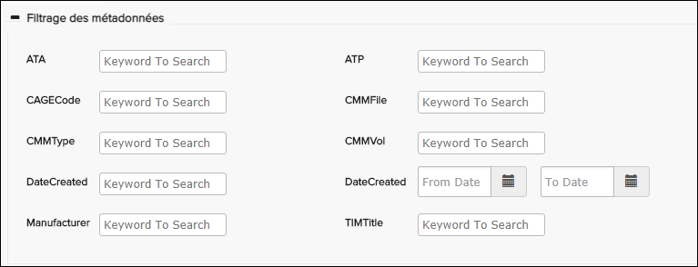
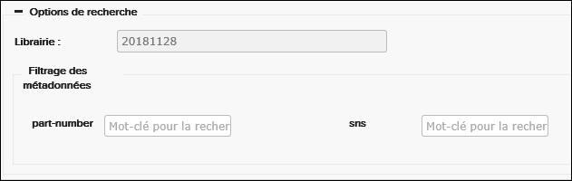

Exemple de recherche en texte intégral

Exemple de recherche en texte intégral - Options de recherche supplémentaires
Pour certains types de données, la recherche en texte intégral comprend une section de filtrage des métadonnées pouvant contenir des options de filtrage pour les métadonnées disponibles dans le Knowledge Center.
Pour les générateurs CMM et XWB, le filtrage des métadonnées apparaît comme indiqué dans la capture d'écran ci-dessous.

Options de recherche CMM / CWB avec filtrage des métadonnées
Options de recherche PDF avec filtrage des métadonnées
Pour les publications CMM C-Series du type de publication BACMP, la section Filtrage des métadonnées peut comporter des champs numéro de pièce et sns:

Options de recherche de la MMM C-Series (BACMP) avec filtrage des métadonnées
Le tableau ci-dessous décrit des exemples d'options de recherche dans la recherche en texte intégral.
| Composant | Description |
|---|---|
| Texte | Le mot-clé ou la phrase que vous souhaitez rechercher dans les publications sélectionnées, y compris toutes les pièces jointes prises en charge avec des données texte lisibles par machine. |
| sélectionner | Le menu Sélection aide l'utilisateur à insérer facilement des opérateurs de recherche et des caractères génériques dans le champ de recherche. Reportez-vous à la section Opérateurs de recherche et caractères génériques dans la recherche en texte intégral pour obtenir des instructions et des exemples concernant les opérateurs et les caractères. |
| Mot exacte | Activez cette option pour renvoyer une correspondance exacte du texte saisi, généralement utile lors de la recherche d'une phrase. |
| Simple/Complexe | Pour les publications iSpec, S1000D et PDF du fabricant uniquement. Sélectionnez Simple pour rechercher en utilisant Chapitre-Section-Sujet, Chapitre-Section ou Chapitre. Sélectionnez Complexe pour effectuer une recherche à l'aide des options disponibles dans les menus déroulants du champ Référence. |
| Fonction | Pour les publications iSpec, S1000D et PDF du fabricant uniquement. Sélectionnez une ou plusieurs fonctions dans le menu déroulant pour réduire la portée de la recherche aux fonctions sélectionnées. |
| FIN |
Cette option apparaît pour certaines publications (comme repérer une publication
ATA). Activez cette option si vous souhaitez rechercher une FIN.
Remarque : Cette
option n'est pas disponible pour les données A350 et C-Series. Rechercher une
FIN dans ces types de manuels, utilisez le volet Fin / Zone / Recherche
dePanneau. Reportez-vous à la section Recherche sur FIN/Zone/Panneau.
Si FIN si activé, la correspondance Exacte est Définie sur true et l'ensemble de publications applicable est sélectionné automatiquement dans le menu déroulant Publications. |
| Partie | Cette option apparaît pour les publications de pièces (tels que AIPC, EIPC, IPD, IPDP et Panasonic_IPD). Activez cette option si vous souhaitez rechercher un numéro de pièce. Lorsque cette option est activée, seuls les publications IPD et AIPC apparaissent dans le menu déroulant Publications. |
| Librarie | La Librarie de recherche. Non-modifiable. Si la recherche est ouverte au niveau de la librairie, vous ne verrez pas le champ de publication et il recherchera automatiquement tous les publications dans cette librairie. |
| Catégorie de publications | Pour les constructeurs de versions iSpec, S1000D et PDF uniquement. Sélectionnez une ou plusieurs catégories de publication dans le menu déroulant pour limiter la portée de la recherche aux catégories sélectionnées. |
| Référence | Champ de recherche d'un DMC complet ou partiel. Vous pouvez cliquer sur les
différentes sections de DMC pour afficher les menus déroulants contenant les valeurs
possibles. Lorsqu'une section DMC a été remplie, la section suivante s'ouvre
automatiquement avec le menu déroulant. Vous pouvez utiliser le pointeur de la
souris ou les touches fléchées pour parcourir les listes déroulantes. Vous pouvez
vider tous les champs en cliquant sur le bouton X à droite.
du champ. Remarque : Le contenu par défaut du champ de référence (étiquettes,
info-bulles, etc.) peut être personnalisé pour différents types de données. Pour
obtenir des instructions, reportez-vous à la section "Configuration de la
recherche SNS (pour les séries A350 / XWB / S1000D / C)" du Flatirons Pinpoint
Configuration Guide.
|
| Publications | Liste déroulante contenant les publications disponibles dans la bibliothèque sélectionnée. Dans ce menu déroulant, vous pouvez sélectionner une ou plusieurs publications dans lesquelles effectuer la recherche. Ceci s'applique également aux publications PDF. |
| Code | Le code d'ATA code se réfère à des sections de la publication. Le code ATA est
représenté dans ce format : AA-BB-CC-DDD. Si les fonctions de recherche supplémentaires sont activées, le champ du code ATA est masqué. Vous pouvez sélectionner l'option de recherche Simple dans le panneau Recherche de texte intégral. Entrez le code ATA dans le champ Cha-Sec-Suj . |
| Classements | Menu déroulant vous permettant de limiter les résultats de la recherche à un type de module de données spécifique. Ce menu peut apparaître pour un contexte autre que Airbus S1000D. |
| Filtrage des métadonnées | Les options de filtrage des métadonnées ne sont disponibles que pour les
publications construites avec les générateurs CMM, C-Series, iSpec, PDF, S1000D, ET
XWB uniquement. Remarque : Si un générateur est configuré pour les kits de métadonnées,
les données du kit de métadonnées sélectionné dans le volet Publier la publication
du Data Manager Publish Publication sont disponibles pour la
recherche avec l'option de Filtrage des métadonnées. Reportez-vous à la rubrique
"Specifying Metadata for Folders and Publications" topic dans Flatirons
Pinpoint Configuration Guide.
Remarque : Administrateurs, vous pouvez
configurer pour afficher ou masquer (par défaut) les champs de filtrage des
métadonnées.S'ils sont masqués, les utilisateurs peuvent sélectionner le + (plus)
à côté de la zone de Filtrage des métadonnées pour afficher
les champs.Reportez-vous à "Show/Hide Expanded Metadata Filtering" dans le
Flatirons Pinpoint Configuration Guide pour plus de
détails.
|
La recherche est lancée en cliquant sur le bouton Rechercher. Si vous devez effacer le filtre et recommencer, cliquez sur le bouton Réinitialiser. Faire référence à. Effectuer une recherche de texte intégral pour plus d'informations.